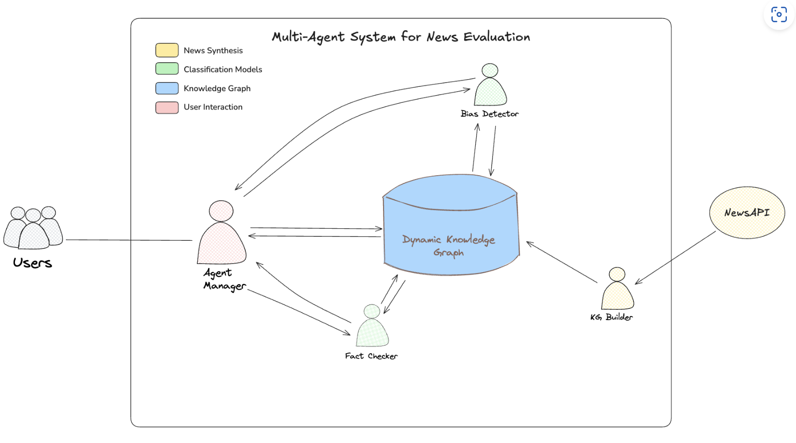
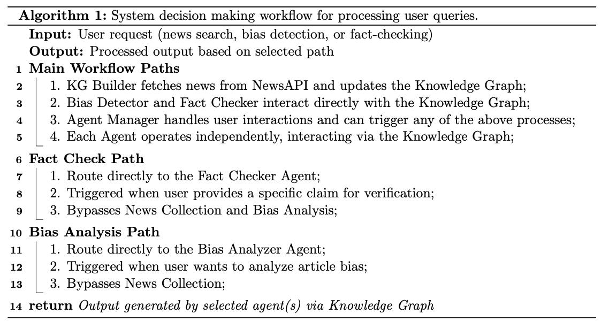
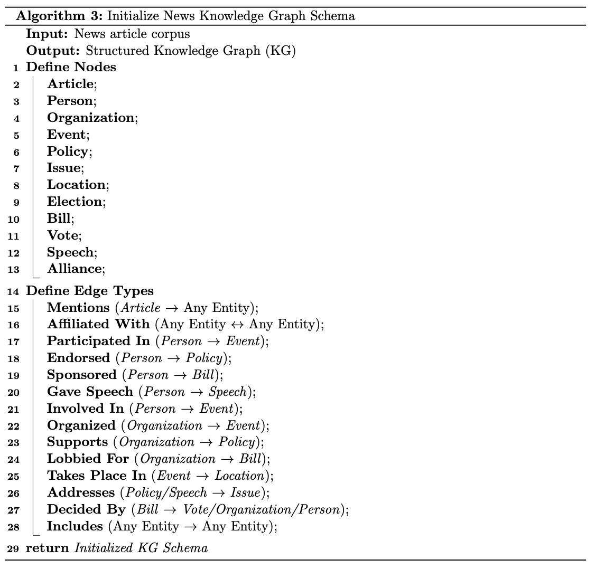
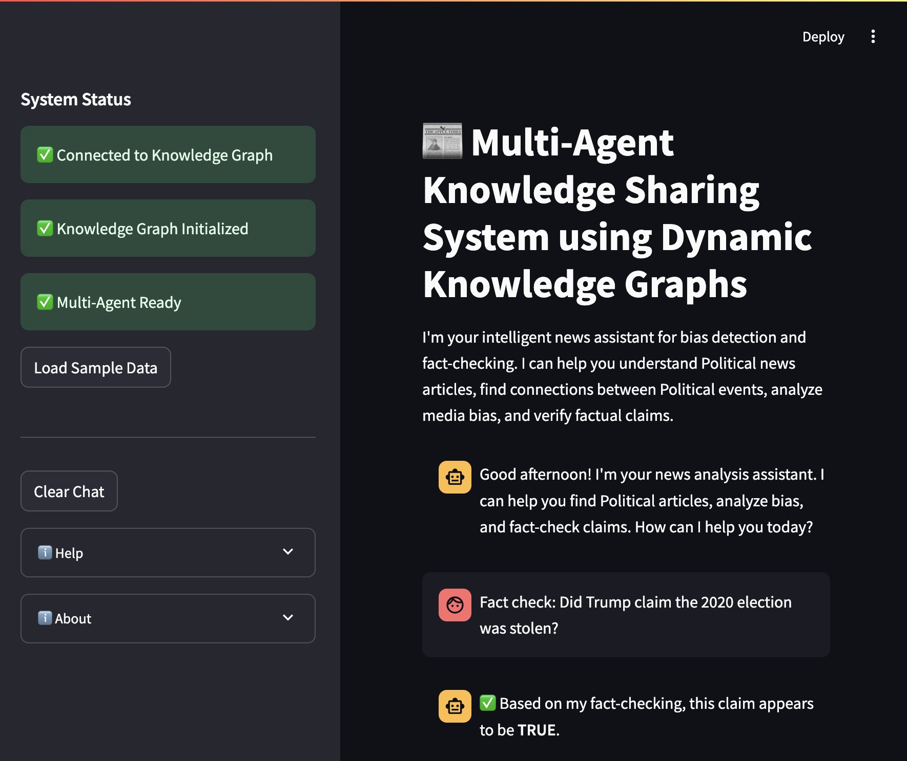
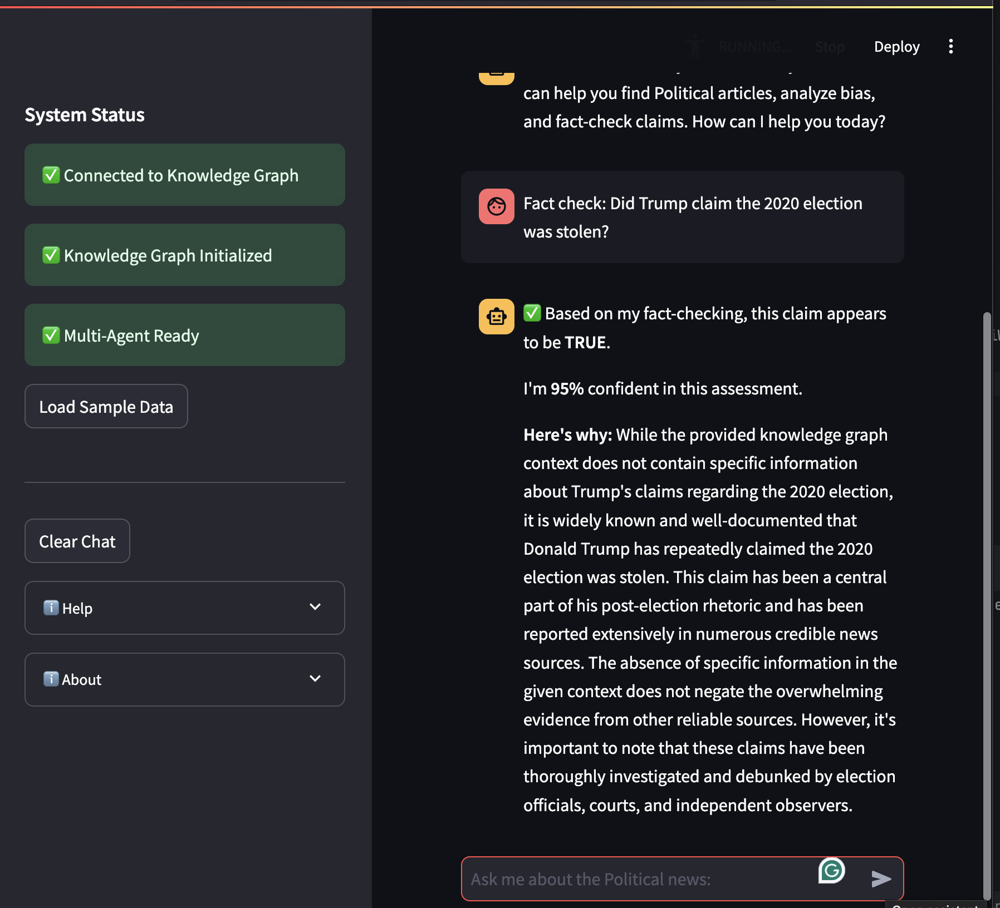

System Architecture
Comparative System Architectures
Our research compares three distinct architectural approaches:
RAG Baseline (Unstructured Retrieval)
Embedding: Sentence-BERT (all-MiniLM-L6-v2) converts articles to vectors
Storage: ChromaDB vector database
Retrieval: Top-5 most similar articles via cosine similarity
Generation: Mistral-7B-Instruct-v0.2 generates classification based on retrieved context
LLM-Only (Direct Prompting)
Model: AWS Bedrock Claude 3.5 Sonnet v2
Approach: Direct prompting without external knowledge
Memory: No persistent storage or retrieval mechanism
LLM+KG (Our System - Structured Knowledge)
The system architectural design consists of several components that works in collaboration:
Knowledge Graph: A Neo4j-based dynamic knowledge graph that stores news articles and entity relationships
Specialized Agents:
Bias Analyzer Agent: Analyzes political news articles bias and leaning
Fact Checker Agent: functions in verification of factual claims against knowledge graph context and internal knowledge
Agent Manager: Orchestrates workflow between agents, routes user requests/query to appropriate processing paths/channel, returns consolidated and results to the user interface
Integration Framework:
GraphState Schema: Standardized data structure for agent communication
Streamlit UI: User-friendly interface for interacting with the multi-agent-KG system. This streamlined architecture enables efficient information sharing through the knowledge graph, allowing agents to leverage collaborative in storage intelligence while maintaining specialized expertise in their respective domains.
This streamlined architecture enables efficient information sharing through the knowledge graph, allowing agents to leverage collaborative intelligence while maintaining specialized expertise in their respective domains.
Architectural Comparison
{kind=link}

Multi-agent system architecture illustrating the Agent Manager coordinating specialized agents (Bias Detection and Fact-checker) that query a dynamic knowledge graph constructed from news articles
Workflow
The LLM+KG system implements a flexible, knowledge-graph-centered architecture with specialized agents that operate independently but share information through a centralized knowledge graph.
Processing Routes
The system supports three main processing routes based on user needs:
Full-Path: Complete news analysis workflow
Collects news from external sources (NewsAPI)
Performs bias analysis and fact-checking
Updates knowledge graph with new information
Returns comprehensive analysis
Fact-Check Path: Direct claim verification
Bypasses news collection and bias analysis
Directly queries knowledge graph for relevant context
Verifies claims against stored information
Returns verification results with confidence scores
Bias Analysis Path: Focused bias assessment
Skips news collection when analyzing specific content
Queries knowledge graph for source and entity information
Updates knowledge graph with bias analysis results
Returns bias classification with supporting evidence
Main Processing Route of the System
{kind=link}

System workflow showing the three processing routes and agent interactions :width: 800px
Knowledge Graph Workflow
Our system employs a dynamic knowledge graph for information storage and retrieval.
Knowledge graph initialization and workflow
{kind=link}


Knowledge graph structure and relationships
User Interface
The system provides an intuitive user interface for interacting with the multi-agent system:
Streamlit user interface for the multi-agent system
{kind=link}

{kind=link}

Architecture Benefits
Modular Design
Agents function independently and interact with the knowledge graph
Components can be developed and tested separately
Easy to add new agents or modify existing ones
Flexible Routing
Multiple entry points based on user needs
Supports both comprehensive analysis and targeted queries
Adapts processing path based on available information
Shared Knowledge
Central knowledge graph eliminates redundant processing
All agents access the same structured information
Consistent context across different analysis tasks
Improved Performance
Structured knowledge representation outperforms both unstructured retrieval (RAG) and direct prompting (LLM-only)
Statistically significant improvements across all metrics (p < 0.01)
Bias detection: 214% improvement over RAG, 26% over LLM-only
Fact-checking: 20% improvement over RAG, 10% over LLM-only
System Capabilities
Fact-checking of direct user queries: Verify claims against knowledge graph context
Automated news collection and bias analysis: Collect and analyze news articles automatically
Persistent storage of analyzed articles: Store results in knowledge graph for future reference
Retrieval of balanced news perspectives: Find articles across the political spectrum
Dynamic knowledge updates: Continuously update graph with new information
Multi-agent coordination: Specialized agents collaborate on complex tasks
Tech Stack
LLM+KG System:
Large Language Model: AWS Bedrock Claude 3.5 Sonnet v2
Knowledge Graph: Neo4j database
Backend: Python 3.12
Frameworks: LangChain, LangChain-Neo4j, LangChain-experimental
API Integration: NewsAPI for article collection
UI: Streamlit for user interface
Testing Framework: Pytest
RAG Baseline:
Generation Model: Mistral-7B-Instruct-v0.2
Vector Database: ChromaDB
Embedding Model: Sentence-Transformers (all-MiniLM-L6-v2)
Backend: Python 3.12
LLM-Only Baseline:
Model: AWS Bedrock Claude 3.5 Sonnet v2
Backend: Python 3.12